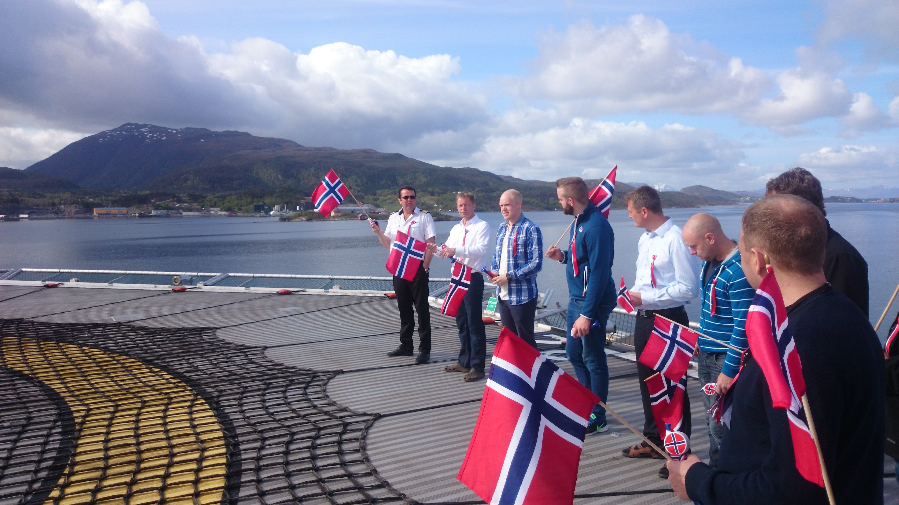

Safety and responsibility
Working offshore means dealing with risk. But on Norwegian vessels,
safety is taken extremely seriously.
“Norway has some of the world’s best safety systems,” Brede says
firmly.

“We trained regularly for every possible situation. If anything
serious happened, there was always a helicopter ready to help nearby.”
During his seven years at sea, Brede never experienced any major
accidents, but the work was still dangerous.
“Working high up on the ship was one of the biggest risks,” he
recalls.
“We often had to repair large pieces of equipment before lowering them
into the sea, which meant climbing tall structures or cranes on deck.
You always had to be careful.”
Sokkeldirektoratet. (u. å.). Oljedirektoratet og Petroleumstilsynet
skifter navn. Source from
https://www.sodir.no/.../oljedirektoratet-og-petroleumstilsynet-skifter-navn/
Offshore Norge. (u. å.). 002 – Recommended guidelines for safety and
emergency response training. Source from
https://www.offshorenorge.no/.../recommended-guidelines-for-safety-and-emergency-response-training/